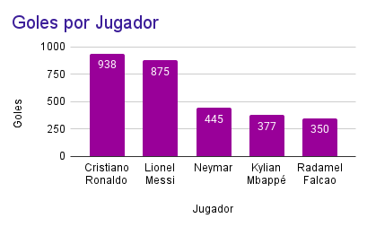
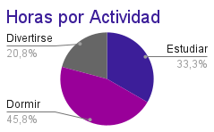
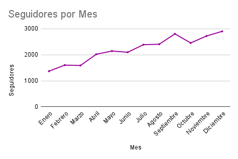

1. ¿Qué son los Datos?
Son información sobre cualquier cosa: tu canción favorita, las notas de un examen o los likes de una foto.
Piénsalos como piezas de LEGO: por sí solas no dicen mucho, pero juntas cuentan una historia.
2. ¿Por qué importan?
¡Porque te dan superpoderes! 🦸♀️ Con datos puedes tomar mejores decisiones, entender el mundo y hasta predecir qué pasará.
3. Tipos de Datos
- Cuantitativos (Números): Todo lo que se puede contar.
- Cualitativos (Cualidades): Lo que no se cuenta con números.
4. El Corazón de los Datos
Son 3 formas de encontrar el "centro" en un montón de datos:
- Media (Promedio): La nota promedio de tus exámenes. Se calcula sumando todo y dividiendo.
- Mediana: Si ordenas a tus amigos por altura, el que queda justo en el medio.
- Moda: La canción que más se repite en tu playlist. ¡La que está de moda!
5. ¡Haz que los Datos Hablen! (Gráficos)
-
Gráfico de Barras: Ideal para comparar. ¿Quién tiene más goles, Messi o Cristiano?

-
Gráfico Circular (Pastel): Muestra porcentajes. ¿Qué parte de tu día dedicas a dormir, estudiar o jugar?

-
Gráfico de Líneas: Perfecto para ver cambios en el tiempo. ¡Cómo han crecido tus seguidores este año!
